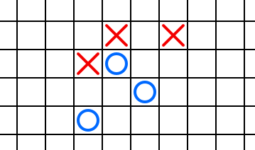
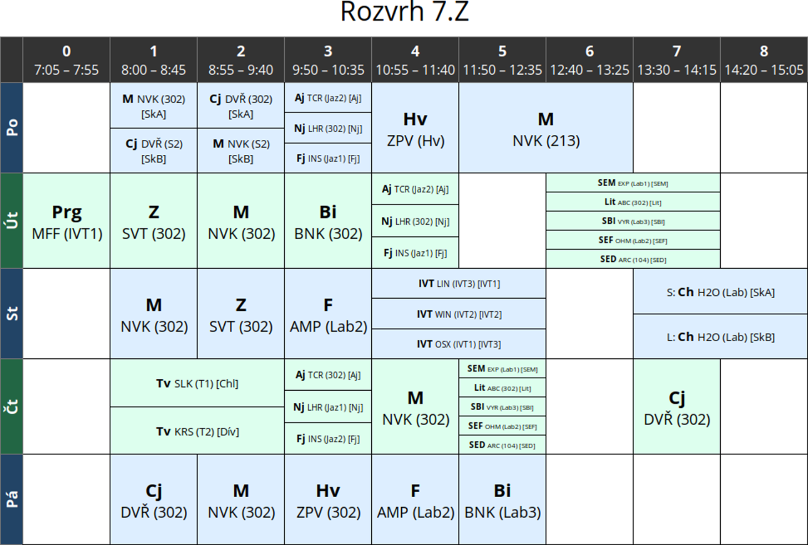

Úlohy můžete řešit v libovolném
pořadí a samozřejmě je nemusíte vyřešit všechny. Počet bodů za každou úlohu
je uveden přímo v jejím zadání. Hodnotí se shoda se zadáním,
funkčnost, dodržování webových standardů a přehlednost zdrojového
kódu.
Na řešení úloh máte 4 hodiny čistého
času.
Před zahájením soutěže vám pořadatel
oznámí, kde najdete testovací soubory a kam máte ukládat řešení
úloh. Kompletní řešení každé úlohy (soubory HTML, CSS, obrázky,
případně Javascript) uložte do samostatného podadresáře nazvaného
jménem úlohy (např. piskvorky). Stránku s řešením vždy pojmenujte index.html a
uložte v kódování UTF-8.
Při zápisu HTML a CSS kódu dodržujte
webové standardy. Součást hodnocení vašich řešení je i kontrola
zdrojových kódů pomocí validátorů. Doporučujeme používat HTML5, ale
můžete použít i starší verze – HTML4 nebo XHTML1.
Při řešení je povoleno používat knihovnu
jQuery bez pluginů. Ostatní frameworky a knihovny nejsou dovoleny.
Piškvorky
max. 16 bodů
Vytvořte webovou stránku, která umožní hrát piškvorky.
Stránka je rozdělena na čtvercová políčka cca 20 × 20px. Políčka jsou od sebe oddělena
jednoduchou čarou. Políčka zabírají celou plochu okna, přičemž nesmí být
zobrazen posuvník (scrollbar). Políčka, která se na stránku nevejdou celá,
můžete buď nezobrazovat, nebo zobrazit jen jejich část. Můžete předpokládat, že
po načtení stránky se nebude měnit velikost okna prohlížeče.
Po načtení stránky je zobrazena rozehraná partie, kterou vidíte na tomto
výřezu:

První hráč má modrá kolečka, druhý hráč červené křížky. Hráči se
pravidelně střídají: nejdříve je na tahu modrý, pak červený, pak znovu
modrý, atd. Kliknutím na prázdné políčko umístí hráč na tahu na toto políčko
svůj symbol. Pokud to nebyl vítězný tah, pokračuje druhý hráč.
Vyhrává hráč, který vytvoří nepřerušovanou řadu pěti svých symbolů. Řada
může vést vodorovně, svisle, nebo úhlopříčně. Pokud některý z hráčů vyhrál,
hra to vhodným způsobem oznámí včetně informace, zda vyhrál modrý, nebo
červený hráč.
Umožněte „undo“, tedy vrácení jednoho tahu. Hráč, který umístil svůj
symbol, může stisknutím klávesy Backspace tento tah vrátit a umístit svůj
symbol jinam. Toto nemusí fungovat, pokud svým tahem prohrál.
Umožněte neomezené undo, tedy postupným mačkáním klávesy Backspace se
vrací další a další tahy až po startovní pozici.
Po konci hry kromě informace o tom, který hráč vyhrál, zobrazte tlačítko
„replay“. Po jeho stisknutí bude přehrána celá právě proběhlá partie od
jejího začátku (tedy počínaje startovní pozicí z obrázku výše). Mezi
jednotlivými tahy při přehrávání zvolte vhodnou pevnou časovou prodlevu.
Během hry zobrazujte výherní a nebezpečná políčka. Políčka, na která je
výhodné táhnout, protože hráč na tahu ihned vyhraje, podbarvěte světle
zeleně. Políčka, která představují okamžitou výherní pozici pro druhého
hráče (a hráč na tahu by tedy takové políčko měl obsadit, jinak
v následujícím tahu prohraje), podbarvěte světle červeně.
Hádej slovo
max. 16 bodů
Vyrobte webovou stránku, na které si uživatel může zahrát hru, ve které hádá
slovo. Hráč zmáčkne písmeno. Pokud je správné, je doplněno do slova. Pokud
je chybné, nakreslí se kousek obrázku.
Úloha má dvě části, které je možné řešit nezávisle. V závěru úlohy jsou
pak obě části propojeny. Budete-li mít jen jednu z částí (nebo obě, ale bez
jejich propojení), získáte jen část bodů.
Kreslení obrázku
- Zobrazte obrázek, který vypadá přibližně takto:

- Zobrazte obrázek postupným vykreslováním čar, ze kterých se skládá. Tedy
nejprve nakreslete čáru tvořící jednu stranu obdélníka, pak druhou, třetí
a čtvrtou stranu, potom postupně první a druhou čáru hlavičky, první,
druhou, třetí a čtvrtou nožičku, očičko a nakonec ocásek.
- Vykreslování animujte. Každá z čar se tedy kreslí postupně, podobně jako
bychom obrázek pomalu kreslili pastelkou. Pokud je to možné, kreslení
jednotlivých čar by mělo navazovat (ne vždy je to možné, celý obrázek
nakreslit jedním tahem pochopitelně nejde). Zvládnete-li animování jen
rovných čar, dostanete část bodů.
Poznámka: splníte-li (3), nemusíte pochopitelně dělat zvlášť
(1) a (2), ty jsou v (3) už obsaženy automaticky. Obdobně pro (2).
Doplňování písmen
Nechte počítač, aby si myslel slovo. Bod navíc dostanete, pokud bude
slovo vybráno náhodně z několika možných. Slovo zobrazte tak, že místo
každého písmene zapíšete podtržítko. Mezi podtržítky musí být viditelné
mezery (nesmí tedy splývat do jedné čáry).
Stránka reaguje na stisk kláves s písmeny. Pokud se dané písmeno nachází
ve slově, zobrazí se toto písmeno na svém místě namísto podtržítka. Dbejte
na to, aby příslušné podtržítko skutečně zmizelo. Pokud je ve slově toto
písmeno víckrát, zobrazí se všechna. Při nahrazování podtržítek písmeny
nesmí ostatní znaky „skákat“, musí zůstat na svých místech.
Pokud hráč uhodne celé slovo, objeví se blahopřání k vítězství.
Chybná písmena
Při načtení stránky není obrázek s prasátkem viditelný.
Pokud hráč stiskl písmeno, které se ve slově nenachází, nebo které už je
zobrazeno, dostává trestný bod. To se projeví tak, že je nakreslena jedna
čára z prasátka. Při dalším trestném bodu je nakreslena další čára
z prasátka, atd. Jinými slovy, zakomponujte část „Kreslení obrázku“, která
je vysvětlená výše, včetně případných animací. Prasátko se ale nebude
kreslit celé automaticky, ale postupně po krocích za každé špatně hádané
písmeno.
V okamžiku, kdy je nakresleno celé prasátko (tedy po vykreslení ocásku),
oznámí hra hráči, že prohrál a odkryje mu celé slovo.
Rozvrh
max. 23 bodů
V této úloze nesmíte používat obrázky.
Statický rozvrh
Vytvořte stránku, na které se zobrazí rozvrh hodin jako na obrázku:

Na stránce by nemělo být nic jiného. Mřížka rozvrhu je
čtvercová, velikosti přibližně 100px×100px. Volné hodiny zabírají
jedno políčko mřížky, rozpůlené hodiny polovinu atp.
První řádek s hodinami a sloupec se dny je černý, s šedým ohraničením
a bílým písmem. Rozložení buňek a velikost písma upravte tak, aby co
nejlépe odpovídaly obrázku. Použijte vhodné bezpatkové písmo dle vlastního
uvážení. Nadpis je vycentrován uprostřed tabulky.
Sudé a liché řádky jsou barevně odlišeny. Sudé řádky používají na pozadí
předmětů barvu #dfe, na pozadí dne
#264. Předměty v liché řádce
#def, den #246.
Volné hodiny zůstávají bílé nezávisle na tom, kde jsou.
Po najetí myši na řádek se všechny předměty v daný den podbarví barvou
#fed. Den se vyznačí barvou #642. Názvy dnů jsou otočeny o 90°.
Zobrazovaný rozvrh by opravdu měl obsahovat všechny informace tak, jak
jsou na obrázku (všechny předměty, učitele, skupiny atp.).
Generovaný rozvrh
Rozšiřte vaše řešení a umožněte načíst data rozvrhu ve formátu JSON. Po otevření stránky
zobrazte formulář, do kterého půjde nahrát soubor s rozvrhem. Popis
formátu naleznete níže. Po nahrání souboru překreslete rozvrh.
K dispozici máte soubor vzor.json obsahující popis
vzorového rozvrhu. Načtěte jej při otevření stránky, aby mohla být
hodnocena první část úlohy.
Pokud nepůjde soubor nahrávat, ale stále půjde snadno vyměnit (např.
bude umístěn na serveru, kde jej porota nahradí za jiný), dostanete většinu
bodů. Boduje se zejména funkce generování stránky z dostupného formátu.
Můžete předpokládat, že uživatel nahrává pouze validní soubory.
Popis formátu
Soubor obsahuje jediný objekt typu rozvrh. Objekt typu rozvrh:
{
class: třída, pro kterou je rozvrh generován (řetězec),
hours: začátky a konce výukových hodin (slovník),
days: popis dní (pole objektů typu den)
}
Objekt typu den:
{
name: název dne (řetězec),
lessons: vyučované předměty (pole objektů typu předmět)
}
Objekt typu předmět:
{
hour: výuková hodina, ve které předmět začíná (číslo),
subject: zkratka předmětu (řetězec),
teacher: zkratka učitele předmětu (řetězec),
room: místnost, ve které probíhá výuka (řetězec),
skupina: kód skupiny, pro kterou je předmět určen (volitelný řetězec),
week: označení týdne (lichý/sudý),
pokud výuka neprobíhá každý týden (volitelný řetězec),
duration: délka předmětu ve výukových hodinách (volitelné číslo, výchozí 1),
}
Přestože může být v datech popsáno více hodin v poli hours,
zobrazte pouze ty sloupce, které jsou potřeba. Pokud je v některý čas více
předmětů najednou, zobrazte je v libovolném pořadí. Pokud některé předměty
trvají více výukových hodin, překrývají se pouze se stejně dlouhými
předměty začínajícími ve stejnou hodinu.